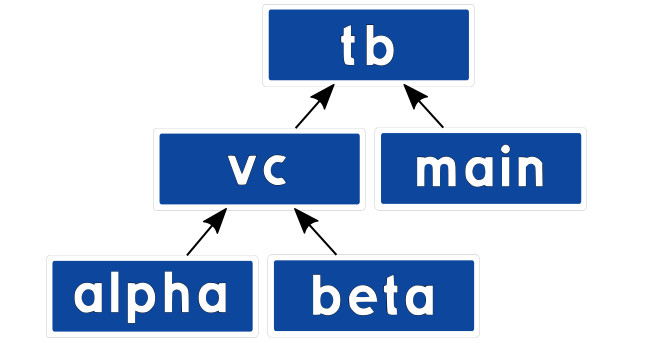
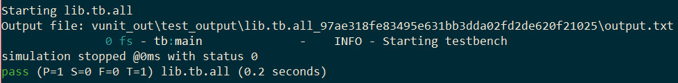
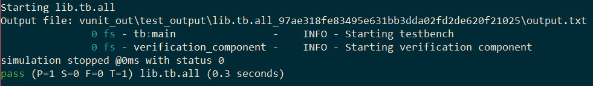
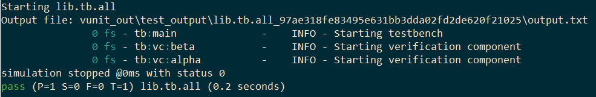
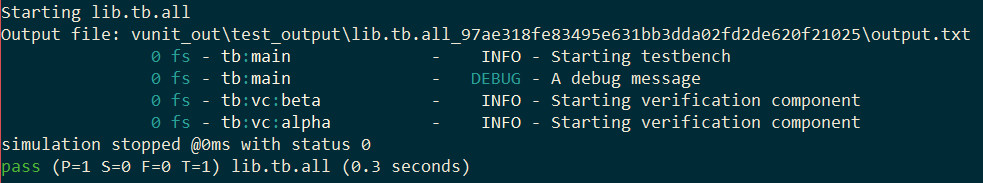
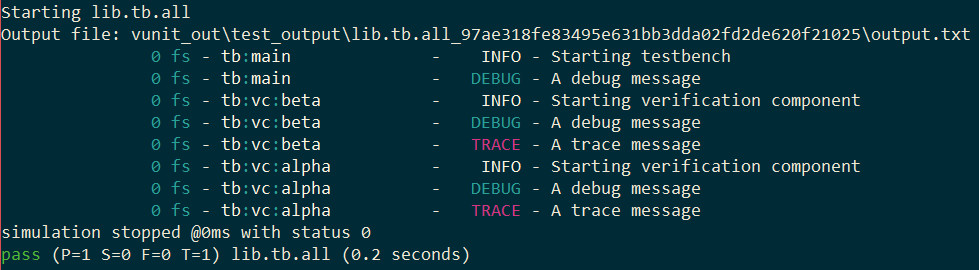

VUnit 3.0 - While Waiting for VHDL-2017¶
Note
This article was originally posted on LinkedIn where you may find some comments on its contents.

Background¶
When the VUnit project started, its primary mission was to create a framework for fully automated testing. However, it was developed bottom-up, starting with the logging framework needed to report the test results. The inspiration for that framework came from the popular software frameworks at the time. They are all quite similar with logger objects receiving the log calls, handlers deciding where the log messages go and formatters that are responsible for the layout. When combined and configured these objects support a great variety of logging needs.
Back then, VHDL-93 was the standard best supported by simulators and the logger object was best represented with a record containing its configuration. Keeping the record in a shared variable enabled the logger to be shared by many and its configuration to be modified when needed. Passing a log entry to a logger was simply
info(logger, "Hello world in VHDL-93");
VHDL-93 didn’t specify what happens if you have a multi-core simulator accessing a shared variable simultaneously from several cores. To address this the protected type was introduced in the VHDL-2000 release. It provides means to encapsulate properties of an object and only allows access through method interfaces. It also became the only legal type for shared variables so VUnit loggers switched to using a protected type.
The syntax for accessing the methods of a protected type variable is different from standard subprograms
logger.info("Hello world with a protected type variable");
but VUnit hides this behind standard subprogram calls to keep a consistent API for all VHDL versions.
info(logger, “Hello world for VHDL-93 and later”);
A drawback with the protected type variable is that it can’t be used as freely as other objects. For example
It can’t be passed to or returned from a function, only procedures
It can’t be used in arrays and records
It can’t be used for generics
These are restrictions making the use of protected types less flexible and something that the upcoming VHDL-2017 standard is starting to address. However, the adoption of new standards tend to take several years so rather than waiting for such simulator support VUnit 3.0 has yet again changed the underlying type of loggers.
The VUnit 3.0 Approach¶
In VUnit 3.0 the logger type doesn’t contain the logger configuration. Instead it’s a reference to where the logger configuration is stored. Such a reference can be a constant without preventing us from changing the configuration being referenced and a constant can be globally shared without having to be of a protected type.
Changing types like this doesn’t change the basic APIs. It’s still
info(logger, "Hello world in VUnit 3.0");
Maintaining old APIs and backward compatibility is important but with this change some old APIs can be improved. For example, we can now use functions where we had to use procedures before. The general approach to handle API improvements in VUnit 3.0 is that we recommend the new interfaces while keeping the more commonly used old interfaces to make the transition smoother.
The move from protected types is not limited to the logging framework, we’ve also taken the same approach for checkers in the checker library. Again, the basic APIs are the same, some interfaces were improved, and we kept commonly used old APIs for backward compatibility.
The fact that we’ve removed protected types from some user objects doesn’t mean that we’ve abandoned them completely. We’re still using them under the hood in places where we need shared variable structures and can live with the limitations.
A Code Example¶
As I described previously there are several restrictions that are lifted when removing protected types but I will just focus on one area in this post. Indirectly it will also be a short introduction to hierarchical logging in VUnit.
The ability to have many loggers means that different verification components and processes can be configured individually with respect to naming, verbosity control, log files etc. One approach would be to leave that responsibility with the verification component but a better approach is to leave the decision making with the testbench builder as s/he is the consumer of the logs.
Let’s show some code. Here is the start of a VUnit testbench architecture. Nothing more than a main loop logging a couple of messages to a custom logger named after the process path name.
architecture a of tb is
begin
main : process
constant main_logger : logger_t := get_logger(main'path_name);
begin
test_runner_setup(runner, runner_cfg);
info(main_logger, "Starting testbench");
debug(main_logger, "A debug message");
test_runner_cleanup(runner);
end process;
end architecture;
The resulting output is

It may look like we created a logger named tb:main but the colon in main’path_name has the special purpose of defining a hierarchy of loggers with parent/child relationships. So the single call to get_logger will create two loggers if they don’t already exist. One logger is named main and is the child of the other logger named tb. Note that the debug message isn’t visible. By default the log level is set not to include such details.
Now let’s create a dummy verification component. It will just take a logger as a generic (not possible prior to VUnit 3.0) and then do some logging on that logger. Here is the entity declaration.
entity verification_component is
generic (logger : logger_t := verification_component_logger);
end entity;
If this component is instantiated without assigning the logger generic it will use verification_component_logger instead. This is a logger defined by the verification component itself and placed in an associated package.

To make the log more readable and the example more interesting I’m going to instantiate two verification components in my testbench and provide them with their own loggers.
vc: block is
constant vc_logger : logger_t := get_logger(vc'path_name);
constant alpha_logger : logger_t := get_logger("alpha", vc_logger);
constant beta_logger : logger_t := get_logger("beta", vc_logger);
begin
alpha : entity work.verification_component
generic map (logger => alpha_logger);
beta : entity work.verification_component
generic map (logger => beta_logger);
end block;
What I’ve done here is to collect all my verification components in a separate block labelled vc. vc has its own vc_logger based on the path name just like I did for main_logger. The loggers for the alpha and beta verification components are created in a different way. Rather than providing a complete hierarchical name to get_logger I just provide a simple name and the parent logger.
My log output will now look like this

Now that we have our hierarchy of loggers we can start controlling it. First I’m going to make that hidden debug message in the main process visible by changing the visibility settings. I’m just changing the settings for main_logger and only for the display handler. What’s being logged on file is handled separately by the file handler.
main : process
constant main_logger : logger_t := get_logger(main'path_name);
begin
test_runner_setup(runner, runner_cfg);
show(main_logger, display_handler, debug);
info(main_logger, "Starting testbench");
debug(main_logger, "A debug message");
test_runner_cleanup(runner);
end process;
The result is

I can also control the loggers for alpha and beta individually but it’s also possible to address them collectively by controlling a shared ancestor in the hierarchy. Let’s add a configuration process to vc.
vc: block is
constant vc_logger : logger_t := get_logger(vc'path_name);
constant alpha_logger : logger_t := get_logger("alpha", vc_logger);
constant beta_logger : logger_t := get_logger("beta", vc_logger);
begin
config: process is
begin
show(vc_logger, display_handler, (debug, trace));
wait;
end process;
alpha : entity work.verification_component
generic map (logger => alpha_logger);
beta : entity work.verification_component
generic map (logger => beta_logger);
end block;
The visibility setting applied to vc_logger will also be inherited and applied to all its descendants, in this case alpha and beta.

That’s all for now. Hopefully you’ve learned something new about hierarchical logging and the possibilities that open up when removing protected types from user objects.
Next VUnit 3.0 Preview¶
The next preview post will be about designing testbenches that need to control multiple DUT interfaces at the same time. The difference between such a testbench and one acting on a single interface boils down to more advanced communication. That is, how we transfer information to/from verification components and how we synchronize their actions when they work concurrently. There are many ways to do this but what’s needed to handle the various use cases is a basically an emailing service in VHDL. Computer science calls it message passing but the point is that emailing is something we all know. It only takes us a few minutes to figure out a new email client so a message passing implementation in VHDL shouldn’t be more complicated than that. VUnit has provided message passing support for several years but with the latest update we have a one-to-one mapping between doing VUnit message passing and managing an email thread. The next post will demonstrate this and to make the emailing analogy very clear I will also interact with my simulation using real emails.